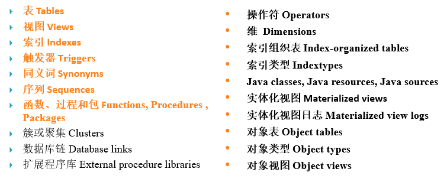
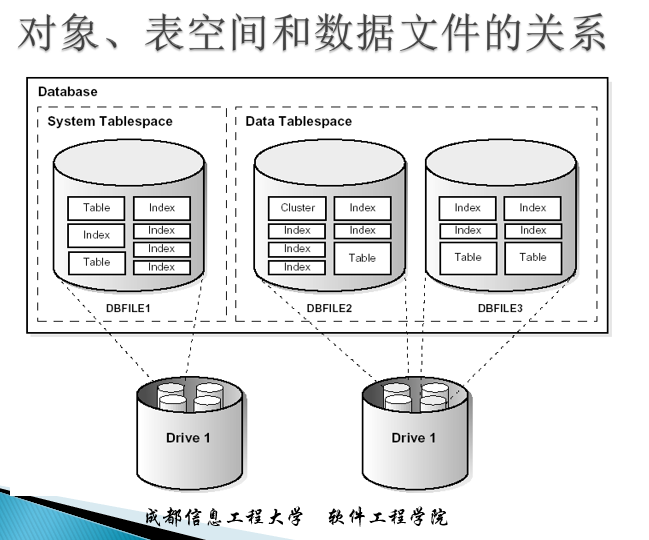
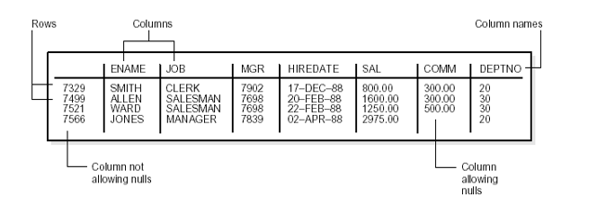
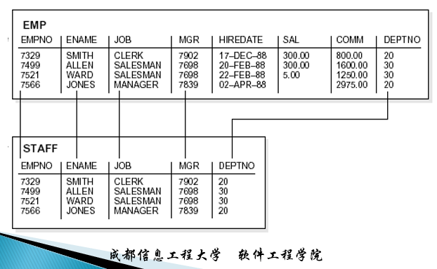
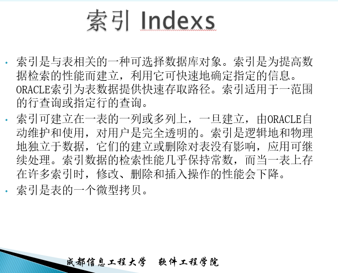
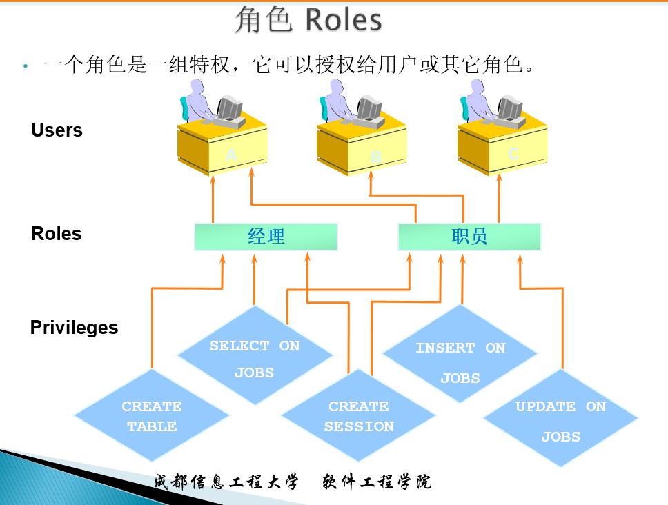
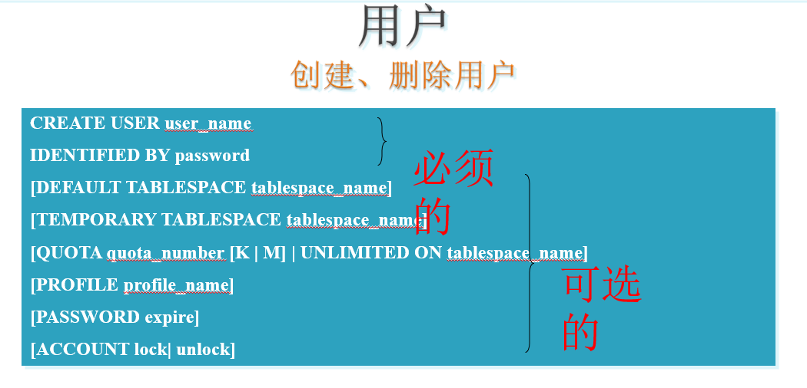

数据库对象——简介
1.1 Oracle服务器的方案对象和非方案对象的概念
1.1.1 方案
Oracle通过方案来组织和维护表、视图、索引、等数据库对象
概念：是一系列逻辑数据结构或对象的集合。一个方案只能够被一个数据库用户所拥有，并且方案的名称与这个用户的名称相同。
Oracle数据库中的每个用户都拥有一个唯一的方案，他所创建的所有方案对象都保存在自己的方案中
1.1.2 方案对象
在Oracle数据库中不是所有对象都是方案。方案对象有：

1.1.3 非方案对象的类型
在Oracle数据库中不是所有的对象都是方案，还有一些数据库对象不属于任何方案，这些对象称为非方案对象，其类型有：
- 表空间 Tablespaces
- 用户 Users
- 角色 Roles
- 回退段 Rollback segments
- 目录 Directories

1.2 表、视图、索引、序列等数据库对象的声明和创建方法
1.2.1 表
- 表是Oracle数据库中基本的数据库存储结构。在定义表时为表建立多个字段，数据以行的记录的形式存储在表中。

字段约束：在创建表时，可对表的各个字段设置约束，强制规定表中的数据必须满足的条件。通过使用约束可以保证关系数据库中的三类完整性规则：
- 实体完整性
- 参照完整性
- 用户定义完整性
NULL值：在Oracle表中，某个字段可以不包含任何值，则称该字段具有“NULL”值
数据完整性约束：数据完整性约束使用户定义的一系列规则，用于防止错误的或无效的数据被插入或删除。在Oracle中，一共可以为表中的字段定义如下五种类型的约束：
- PRIMARY KEY 主码约束
- NOT NULL 非空约束
- UNIQUE 唯一码约束
- FOREIGN KEY 外键(外部码)约束
- CHECK 约束
1.2.2 视图
- 视图是由一个或多个表（或其他视图）中的数据的一种定制的表示，是用一个查询定义，所以可认为是一个存储的查询（stored query）或是一个虚表(virtual table)。视图可在使用表的许多地方使用。
- 引入视图的好处
- 通过限制对表的行预定义集合的存取，为表提供附加的安全性
- 隐藏数据复杂性
- 为用户简化命令
- 为基本表的数据提供另一种观点
- 可将应用隔离基本表定义的修改
- 用于不用视图无法表示的查询
- 用于保存复杂查询
创建视图(以EMP为基础表创建STAFF视图)
1 | CREATE VIEW staff AS |

创建视图（以EMP和DEPT为基础表创建EMP_VIEW视图）
1
2
3
4CREATE VIEW emp_view AS
SELECT empno, ename, sal, loc
FROM emp, dept
WHERE emp.deptno = dept.deptno AND dept.deptno = 10查询EMP_VIEW视图
1
SELECT ename FROM emp_view WHERE empno = 9876
Oracle将上述查询语句合并为如下查询语句
1
2
3SELECT ename FROM emp, dept
WHERE emp.deptno = dept.deptno AND dept.deptno = 10
AND emp.empno = 9876重定义视图
1
2
3
4CREATE OR REPLACE VIEW emp_view AS
SELECT empno, ename, sal, loc
FROM emp, dept
WHERE emp.deptno = dept.deptno;删除视图
1
DROP VIEW emp_view;
1.2.3 索引

1.2.4 序列
序列：序列也称序列生成器(sequence generator)产生序列号。在多用户环境下该序列生成器特别有用，可生成各返回序列号而不需要磁盘I/O或事务封锁。
•序列号为ORACLE整数，最多可有38个数字。
序列的创建
1
2
3
4
5
6
7SQL> CREATE SEQUENCE project_team_seq
START WITH 1000 INCREMENT BY 1
MINVALUE 1
CACHE 1000 NOCYCLE NOORDER
SQL>/
SQL> SELECT project_team_seq.NEXTVAL FROM DUAL;1.2.4 同义词
一个同义词(synonym)为任何表、视图、快照、序列、过程、函数或包的别名，其定义存储在数据字典中。同义词因安全性和方便原因而经常使用，可用于：
- 可屏蔽对象的名字及其持有者。
- 为分布式数据库的远程对象提供位置透明性。
- 为用户提供一个简单且易于区分的名字。
有两种同义词：公用和专用
- 一个公用同义词为命名为PUBLIC特殊用户组所持有，可为数据库中每一个用户所存取。
- 一个专用同义词是包含在指定用户的方案中，仅为该用户和授权的用户所使用。
1 | -- 私有同义词 |
1.2.5 角色

1 | -- 创建、删除角色 |
1.2.6 用户
创建、删除用户
1
2
3
4
5
6
7
8CREATE USER user_name
IDENTIFIED BY password
[DEFAULT TABLESPACE tablespace_name]
[TEMPORARY TABLESPACE tablespace_name]
[QUOTA quota_number [K | M] | UNLIMITED ON tablespace_name]
[PROFILE profile_name]
[PASSWORD expire]
[ACCOUNT lock| unlock]
命令解释
- CREATE USER username —用户名
- IDENTIFIED BY password—- 用户口令
- [DEFAULT TABLESPACE tablespace ]— 缺省的表空间,该用户创建的对象默认存在此。
- [TEMPORARY TABLESPACE tablespace] —该用户使用的缺省的临时表空间
- [[QUOTA [integer K[M]][UNLIMITED] ON tablespace —用户在该表空间中允许使用k[m]字节
- [PROFILES profile_name] —概要文件的名字
- [PASSWORD EXPIRE] —立即将口令设成过期状态，用户在登录进入前必须修改口令。
- [ACCOUNT LOCK or ACCOUNT UNLOCK] —用户是否被加锁
启用与禁用用户
- 禁用用户账户 ALTER USER user_name ACCOUNT LOCK;
- 启用用户账户 ALTER USER user_name ACCOUNT UNLOCK;
删除用户
DROP USER user_name [CASCADE]
如果该用户方案中已存在方案对象，则需要带有CASCADE子句。
1 | -- 例1 创建新用户zhangsan，密码为abcdef，命令如下。 |
1 | -- 例2 创建新用户lisi，密码为abcdef，表空间为users，并且在users表空间上可以使-- 用10M的磁盘空间。 |
1 | -- 例3 创建新用户allen，密码为abcdef，并且设置密码已过期，用户的状态为加锁。 |
1 | -- 例4 为新用户zhangsan授予和数据库建立会话的权限，并用zhangsan连接数据库。 |
1 | -- 例5 为新用户lisi授予CONNECT的角色。 |
1 | -- 例6 修改用户zhangsan的密码为ora，并设置默认表空间为users表空间，在该表空间中可以使用无限大的磁盘空间。 |
1 | -- 例7 为数据库中用户账号scott解锁，启用该账号。 |
1 | -- 例8 删除用户zhangsan。 |